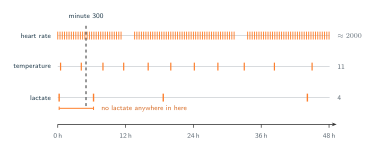

07 · Attention Over Time
The Irregular Series
Joining similar but different things.
So far we have implicitly made a somewhat absurd assumption: that the information we get about the heart arrives at the same granularity as what we get for lactate. I am not a doctor, but I would say this makes zero sense. This leads us to put some more time into understanding not only the matrix but how this data is generated. Heart rate comes off a bedside monitor, so there is a reading most minutes, apart from the stretches where the trace drops out while the patient is being washed or moved. Temperature is written down by whoever is on the ward, which across these 48 hours happened eleven times. Lactate is a laboratory result, so blood has to be drawn, sent and run, and there are four of them, at minutes 15, 380, 1120 and 2650. In summary, no two of the three were ever recorded at the same instant, and nothing about when any of them happened was decided by a clock.
Now go back to the row we have been carrying since section 01. At minute 300 it read $[78,\, 37.2,\, 2.4]$ which represent a pulse, a temperature, a lactate. The monitor did record a pulse at minute 300. The nearest charted temperature belongs to some other minute entirely. And the lactate readings sit at minutes 15 and 380, so at minute 300 there is no lactate at all. The 2.4 is not a measurement, it is a number we put there so that the row would have three entries.
It is tempting to file all of this under missing data and reach for a single repair. There are three separate problems here, and they break different things.
- Uneven spacing within a channel. The gaps between the four lactate readings are 365, 740 and 1530 minutes, so knowing that a reading is the third one tells us nothing about when it happened. This is the complaint from section 06.
- Different rates across channels. Roughly two thousand pulse readings against eleven temperature readings against four lactate readings, no single patch length suits all three at once, and the $N \times P$ matrix from section 03 has no shape that fits them together.
- No alignment between channels. Choose any instant in the 48 hours and at most one of the three has a reading there, which leaves the stacked token from section 04 with nothing to be built out of.

Up to this point, our efforts have been around restructuring the data to fit the mechanism. We grouped minutes into windows, combined channels into single tokens or kept them separate, and shifted the forecasting horizon out of the sequence and into a dedicated head. Each of these adjustments succeeded strictly because a continuous underlying grid was available to be manipulated. In this new context, that structural grid does not exist. Any rectangular format we attempt to create from this chart will naturally contain empty cells that the clinical staff never recorded. Deciding to fill these gaps is not merely a formatting choice. It involves artificially generating numbers that no one ever measured, which is exactly the process we applied to the 2.4 value.
This is not particular to the clinical settings. A weather station transmits data until it freezes over, a telescope observes a start only when the sky is clear and time permits, and so on. This final point is particularly important to remember. The four lactate readings were not taken arbitrarily. A medical professional ordered each test due to a specific concern. Consequently, the actual timing of these measurements contains valuable information. A model that views these irregular intervals merely as errors to be corrected is ultimately ignoring a critical portion of the data.
Formally, each channel $d \in \{1, \dots, D\}$ carries its own list of observations, of length $L_d$:
where $t_{i,d}$ is the minute at which the $i$-th observation of channel $d$ was made and $x_{i,d}$ is the value recorded at it. The stay as a whole is $s = (s_1, \dots, s_D)$. Three conditions hold:
- The lengths differ across channels. Here $D = 3$, with $L_1 \approx 2000$, $L_2 = 11$ and $L_3 = 4$.
- The spacings $t_{i+1,\, d} - t_{i,d}$ are not constant, either within a channel or between channels.
- The observation times of different channels do not coincide: $t_{i,d} \neq t_{j,d'}$ for $d \neq d'$, so no instant carries a complete vector of $D$ values.
One further thing changes once the rectangle is gone. Let's say we want to calculate a lactate value for minute 300. Now the system must determine the most probable lactate level at that specific moment by relying on the four available measurements at minutes 15, 380, 1120, and 2650, alongside the continuous activity of the pulse and temperature during the intervening time. Our accuracy in answering this question can vary significantly, and this interpolation represents a fundamentally different challenge than predicting a future event like estimating the pulse in the 40th hour. As a result, the model now faces two distinct objectives. It must deduce what occurred during unmeasured historical gaps while simultaneously forecasting future outcomes.
This provides a fundamental test to apply to all subsequent analyses. A processing mechanism either accepts the raw data $s$ exactly as it is presented, which consists of three lists of varying lengths lacking common timestamps, or it fails to do so. If the system requires a rigid rectangular format beforehand, it means an unmeasured value is being artificially generated somewhere within the pipeline. Once this fabricated number is recorded, it becomes completely indistinguishable from the other actual measurements.